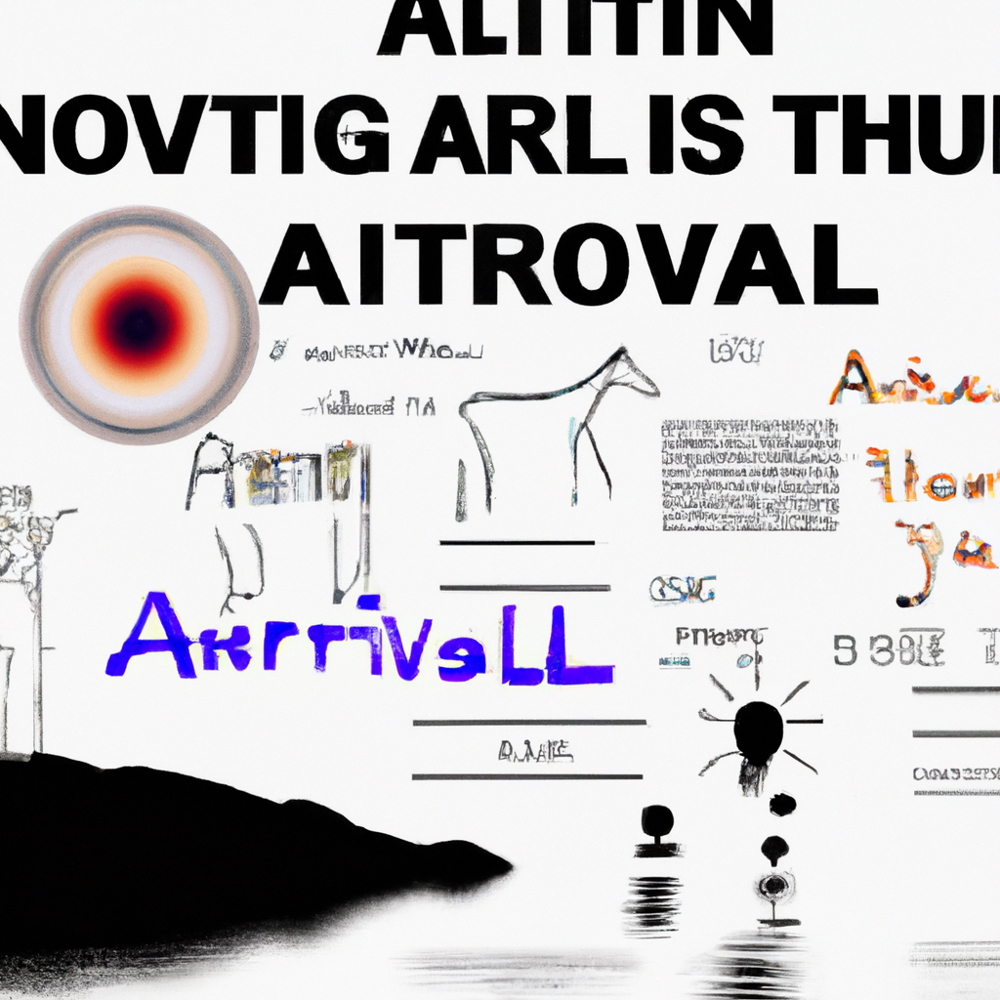

How AI will revolutionise the world
Artificial Intelligence (AI) is transforming the way we interact with machines and the way we do business. It is becoming increasingly popular and is being used to solve a variety of problems in many different industries. AI can help automate processes, identify patterns and trends in data, and provide insights that can be used to make better decisions.
AI is a rapidly growing field and it is being used in a variety of applications. In healthcare, AI is being used to detect and diagnose diseases, predict treatments, and even monitor patient behavior. AI is being used to improve customer service and automate customer support tasks. It is being used in the automotive industry to create driverless cars and in the finance industry to automate investment decisions. AI is even being used in the creative arts to generate music and art.
AI has the potential to revolutionize the way we do business and the way we interact with the world around us. It can help us make better decisions, automate mundane tasks, and improve the efficiency of our processes. It can also help us identify patterns and trends in data that can be used to gain new insights. AI is here to stay, and it is changing the way the world works.